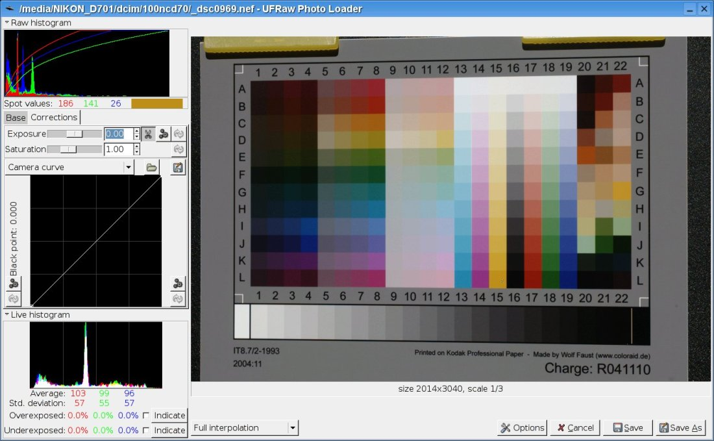
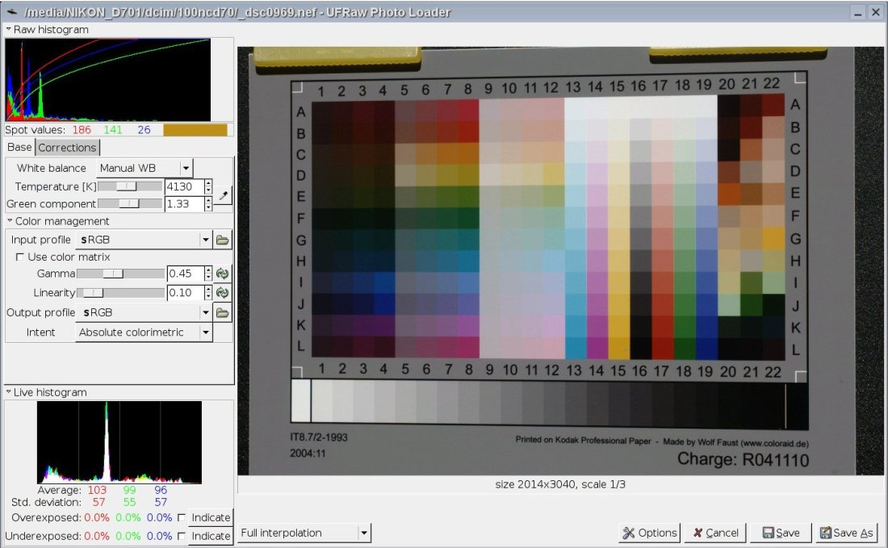

| Home | Monitor Tab | Preferences Tab | Profile Checker | Profile Identification | Profile Parameters | Monitor Values Dialog | Set Gamma Dialog | Install Reference File Dialog | UFRAW Tutorial |
LPROF is an open source application that creates ICC profiles for cameras, scanners and monitors.
Capturing the target correctly is critical to producing a good profile and is perhaps as large of a factor as 80% to 90% in determining how good your profile will be. We will start out with how to create a general purpose camera profile. That is a profile that can be used for most images where the light has a smooth spectrum (direct and shaded sun light, cloudy, flash and tungsten light but not florescent light) and the white balance of the actual scene is close to what was set on the camera or selected/set in UFRAW.
Here are some tips for getting a good IT8.7/2 image:
Use a tripod.
Use an IT8.7/2 target that has a matte or
non-glossy surface. This will reduce reflections on the surface of
the target and make it easier to get a good profile. You can get good results using a glossy target but it requires a
great deal of care to prevent reflections from affecting the image. The
Wolf Faust "C1"
target which is an A4 size matte target is highly
recommended. This target is a larger size which
allows you to set up the camera farther away from the target which
helps prevent shadows and reflections from affecting the target.
It
also has a stiff backing that holds the target flat.
Place
the target where the light is even and on a
surface where it is possible to change it's position. I use a
black music stand and some laundry pins to hold and position the
target. Even lighting is extremely critical.
Be sure to avoid reflections or shadows from near by objects.
Bracket
your exposures to make sure that you get a
good one. It is important that the target is not over or under
exposed. I recommend bracketing by the smallest increments
that your camera will allow. The correct exposure should be
about 1/3 to 1/2 stop below where there are blown out patches.
For
older versions of LPROF (1.10 and earlier) it was critical that the
camera be setup in a way
that is well centered and square to the target. In this
release of LPROF the user interface for placing the picker template is
much improved and this is no longer necessary. But for images
that are poorly squared it may require making adjustments when placing
the pick template in LPROF. So try to get the camera centered on and square to the target.
Open the raw file in UFRAW. Set all of the controls to
the default settings as a starting point. White
balance should be correctly set for the type
of lighting you used when photographing the target. Direct sunlight,
cloudy, shade or
incandescent are all good. Do not use fluorescent lighting. There
are way too many variables to get results suitable for general purpose
usage. Start out with gamma set to 0.45 and linearity set to
0.10.
In the corrections tab set exposure to 0.00 and saturation to 1.00. Do not use Black point compensation or a camera curve. All of these are the default settings.

Then click in the patch in the lower left corner (the lightest gray
patch) to display the spot RGB values and increase/decrease exposure until the spot value readings are between
210 and 230. But make sure that no readings anywhere on the target are above 245 to 250. The
patches at A13-19 can be brighter than the lightest gray patch so check
these very carefully for any spot values that may be over 245 to 250. This
controls how bright your images will be when using the profile created using this target. If
your images are too bright then make the target brighter and vis versa.
But these setting should get you in the ball park. Also
remember that is it critical that no spot values anywhere on the target
are 255 so this limits how much exposure compensation you can use to
darken your images with the profile.

Now click on the DMAX patch (lowest patch on the right) and check it's spot values. This should have RGB values between 10 and 20 and it's spot values should be clearly different from the patch(s) next to it. If the spot values of the DMAX patch are close to zero then decrease the setting of the linearity slider. If the DMAX patch has spot values much higher than 20 increase the setting of the linearity slider. Go easy this should be some where between 0.05 and 0.15 in most cases. If the spot values of the DMAX patch and the patch(s) next to it are not different then either your camera does not have enough dynamic range to capture these darker colors or the image was under exposed.Now you have the target image that will be processed by LPROF to make a profile for your camera. Please see Camera and Scanner Profiler Tab for details on how to create the profile.
| copyright © 2005 LPROF | Trademarks | LPROF 1.11
|